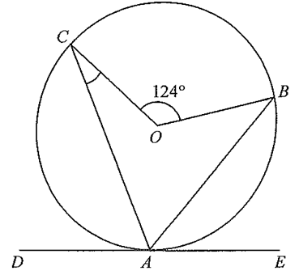

In the figure, \(O\) is the centre of the circle \(ABC\). \(DE\) is the tangent to the circle at \(A\). If \(AB\) is the angle bisector of \(\angle CAE\), then \(\angle ACO =\)
Also given in the figure: \(\angle BOC = 124^\circ\).

Drag the sliders to move the points and watch how the angles respond. The relation \(\angle ACO = \angle ACB - \angle OCB\) always holds as long as \(AB\) bisects \(\angle CAE\).